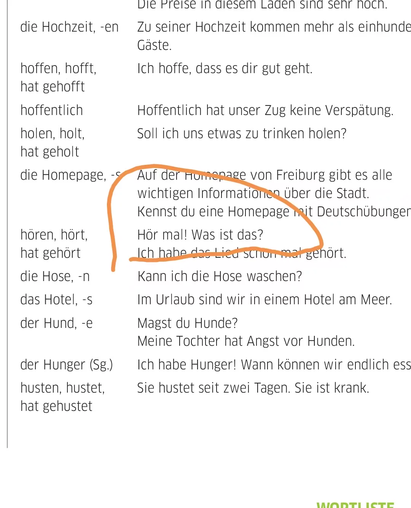

Journal · 2026-05-14
线上 · 德语学习群
晚上，我在德语学习群里聊起练了大半年才终于“弹”起来的小舌颤音。从法语练到德语，这一次总算听见了进步。

小舌音终于“弹”起来了
2026 年 5 月 14 日 · 20:30—20:40
微信号、群号与第三方昵称已隐去；语音仅保留消息类型和时长，未公开声纹。
微信聊天记录
吉姆哈克 : 华安里_BERT感知评分脚本.py 2026年5月14日 21:57 吉姆哈克 : 华安里_结果格式化脚本.py 2026年5月14日 21:57 吉姆哈克 : 华安里_感知得分.json 2026年5月14日 21:57 吉姆哈克 : 华安里_感知得分.csv 2026年5月14日 21:57 吉姆哈克 : 华安里_感知得分.xlsx 2026年5月14日 21:57 吉姆哈克 : [表情][表情][表情] 2026年5月14日 21:57 吉姆哈克 : [表情] 2026年5月14日 22:00 阿力 行管 : [表情][表情][表情][表情][表情][表情][表情][表情] 2026年5月14日 22:00 阿力 行管 : 辛苦啦 看着好高科技 2026年5月14日 22:00 阿力 行管 : 很专业[表情][表情] 2026年5月14日 22:00 吉姆哈克 : [图片] 2026年5月14日 22:00 吉姆哈克 : [图片] 2026年5月14日 22:00 吉姆哈克 : [图片] 2026年5月14日 22:00 吉姆哈克 : 我直接用智能助理搞定的 2026年5月14日 22:00 吉姆哈克 : 本质上也是“小龙虾” 2026年5月14日 22:00 吉姆哈克 : 其实我心里根本就没底 2026年5月14日 22:00 吉姆哈克 : 是用Python脚本跑出来的，我不知道里面有没有埋雷[表情][表情][表情] 2026年5月14日 22:00 阿力 行管 : 不担心[表情][表情] 2026年5月14日 22:10 毕苏杭 : [表情] 2026年5月14日 23:05 阿力 行管 : [表情][表情][表情][表情][表情][表情] 2026年5月14日 22:05 阿力 行管 : 这是哪个大模型呀 2026年5月14日 22:05 阿力 行管 : 学长我还停留在老一辈的豆包和DeepSeek里 2026年5月14日 22:05 吉姆哈克 : 这是个智能体 2026年5月14日 22:11 吉姆哈克 : 是个类似于小龙虾的产品 2026年5月14日 22:11 吉姆哈克 : 是个美得惊为天人、强得比肩神明的秘书[吃瓜][吃瓜][吃瓜] 2026年5月14日 22:11 吉姆哈克 : 可以理解为，这是一个有手有脚、还会动脑的AI，他的脑袋是DeepSeek Pro 2026年5月14日 22:11 吉姆哈克 : 这并不感伤，因为学弟学妹们也是如此[表情][表情][表情] 2026年5月14日 22:11 吉姆哈克 : 说点大家不知道的，我其实是整个学院第一个养小龙虾的人，还用小龙虾做过一些劲爆的事情[表情][表情][表情] 2026年5月14日 22:11 阿力 行管 : [表情][表情][表情][表情][表情][表情] 2026年5月14日 22:15 阿力 行管 : 这才是真正的政府的思想库领导者的摇篮 2026年5月14日 22:15 阿力 行管 : [表情] 2026年5月14日 22:15 阿力 行管 : 这些高科技是真玩不明白 2026年5月14日 22:15 阿力 行管 : [表情][表情][表情][表情][表情][表情] 2026年5月14日 22:15 阿力 行管 : 这才是真正的政府的思想库领导者的摇篮 2026年5月14日 22:15 阿力 行管 : [表情] 2026年5月14日 22:15 阿力 行管 : 这些高科技是真玩不明白 2026年5月14日 22:15 吉姆哈克 : 可以的 2026年5月14日 22:15 吉姆哈克 : [图片] 2026年5月14日 22:15 吉姆哈克 : [图片] 2026年5月14日 22:15 吉姆哈克 : 其实，我昨晚帮校友远程配置智能体，最后还赚了两张毛爷爷[表情][表情][表情] 2026年5月14日 22:15 吉姆哈克 : 如果本院的同学找我帮忙，我肯定是不会收毛爷爷的[吃瓜][吃瓜][吃瓜] [表情] 2026年5月14日 22:15 吉姆哈克 : [表情] 2026年5月14日 22:15 阿力 行管 : 我将追随学弟！ 2026年5月14日 22:33
吉姆哈克 : Hua'anli_BERT perception-scoring script.py 2026年5月14日 21:57 吉姆哈克 : Hua'anli_result formatting script.py 2026年5月14日 21:57 吉姆哈克 : Hua'anli_perception score.json 2026年5月14日 21:57 吉姆哈克 : Hua'anli_perception score.csv 2026年5月14日 21:57 吉姆哈克 : Hua'anli_perception score.xlsx 2026年5月14日 21:57 吉姆哈克 : [表情][表情][表情] 2026年5月14日 21:57 吉姆哈克 : [表情] 2026年5月14日 22:00 阿力 行管 : [表情][表情][表情][表情][表情][表情][表情][表情] 2026年5月14日 22:00 阿力 行管 : Thanks for the hard work, it looks so high-tech 2026年5月14日 22:00 阿力 行管 : Very professional[表情][表情] 2026年5月14日 22:00 吉姆哈克 : [图片] 2026年5月14日 22:00 吉姆哈克 : [图片] 2026年5月14日 22:00 吉姆哈克 : [图片] 2026年5月14日 22:00 吉姆哈克 : I just pulled it off with the intelligent assistant 2026年5月14日 22:00 吉姆哈克 : Essentially it's also a “crayfish” 2026年5月14日 22:00 吉姆哈克 : Honestly, deep down I had no confidence at all 2026年5月14日 22:00 吉姆哈克 : It was run with a Python script, and I don't know if there are any landmines buried in it[表情][表情][表情] 2026年5月14日 22:00 阿力 行管 : No worries[表情][表情] 2026年5月14日 22:10 毕苏杭 : [表情] 2026年5月14日 23:05 阿力 行管 : [表情][表情][表情][表情][表情][表情] 2026年5月14日 22:05 阿力 行管 : Which large model is this? 2026年5月14日 22:05 阿力 行管 : Senior, I'm still stuck in the older generation of Doubao and DeepSeek 2026年5月14日 22:05 吉姆哈克 : This is an agent 2026年5月14日 22:11 吉姆哈克 : It's a product similar to a crayfish 2026年5月14日 22:11 吉姆哈克 : It's a secretary so beautiful she defies heaven and so powerful she rivals the gods[吃瓜][吃瓜][吃瓜] 2026年5月14日 22:11 吉姆哈克 : You can think of it as an AI that has hands and feet and can still think, and its brain is DeepSeek Pro 2026年5月14日 22:11 吉姆哈克 : This isn't sentimental, because the junior students are like this too[表情][表情][表情] 2026年5月14日 22:11 吉姆哈克 : Here's something not everyone knows: I'm actually the first person in the whole college to keep a crayfish, and I've even used it to do some explosive things[表情][表情][表情] 2026年5月14日 22:11 阿力 行管 : [表情][表情][表情][表情][表情][表情] 2026年5月14日 22:15 阿力 行管 : This is the true cradle of the government's think-tank leaders 2026年5月14日 22:15 阿力 行管 : [表情] 2026年5月14日 22:15 阿力 行管 : I really can't figure out this high-tech stuff 2026年5月14日 22:15 阿力 行管 : [表情][表情][表情][表情][表情][表情] 2026年5月14日 22:15 阿力 行管 : This is the true cradle of the government's think-tank leaders 2026年5月14日 22:15 阿力 行管 : [表情] 2026年5月14日 22:15 阿力 行管 : I really can't figure out this high-tech stuff 2026年5月14日 22:15 吉姆哈克 : Sure thing 2026年5月14日 22:15 吉姆哈克 : [图片] 2026年5月14日 22:15 吉姆哈克 : [图片] 2026年5月14日 22:15 吉姆哈克 : Actually, last night I helped an alumnus configure an agent remotely, and in the end I even earned two hundred-yuan notes[表情][表情][表情] 2026年5月14日 22:15 吉姆哈克 : If students from our own college come to me for help, I definitely won't charge them a cent[吃瓜][吃瓜][吃瓜] [表情] 2026年5月14日 22:15 吉姆哈克 : [表情] 2026年5月14日 22:15 阿力 行管 : I will follow you, junior! 2026年5月14日 22:33
吉姆哈克 : Hua'anli_script de notation de perception BERT.py 2026年5月14日 21:57 吉姆哈克 : Hua'anli_script de formatage des résultats.py 2026年5月14日 21:57 吉姆哈克 : Hua'anli_score de perception.json 2026年5月14日 21:57 吉姆哈克 : Hua'anli_score de perception.csv 2026年5月14日 21:57 吉姆哈克 : Hua'anli_score de perception.xlsx 2026年5月14日 21:57 吉姆哈克 : [表情][表情][表情] 2026年5月14日 21:57 吉姆哈克 : [表情] 2026年5月14日 22:00 阿力 行管 : [表情][表情][表情][表情][表情][表情][表情][表情] 2026年5月14日 22:00 阿力 行管 : Merci pour le travail, ça a l'air super high-tech 2026年5月14日 22:00 阿力 行管 : Très professionnel[表情][表情] 2026年5月14日 22:00 吉姆哈克 : [图片] 2026年5月14日 22:00 吉姆哈克 : [图片] 2026年5月14日 22:00 吉姆哈克 : [图片] 2026年5月14日 22:00 吉姆哈克 : Je l'ai fait directement avec l'assistant intelligent 2026年5月14日 22:00 吉姆哈克 : En fait, c'est aussi une « écrevisse » 2026年5月14日 22:00 吉姆哈克 : Au fond, je n'avais aucune certitude 2026年5月14日 22:00 吉姆哈克 : C'est exécuté par un script Python, et je ne sais pas s'il y a des pièges cachés dedans[表情][表情][表情] 2026年5月14日 22:00 阿力 行管 : Ne t'inquiète pas[表情][表情] 2026年5月14日 22:10 毕苏杭 : [表情] 2026年5月14日 23:05 阿力 行管 : [表情][表情][表情][表情][表情][表情] 2026年5月14日 22:05 阿力 行管 : C'est quel grand modèle de langage ? 2026年5月14日 22:05 阿力 行管 : Aîné, j'en suis encore à l'ancienne génération de Doubao et DeepSeek 2026年5月14日 22:05 吉姆哈克 : C'est un agent 2026年5月14日 22:11 吉姆哈克 : C'est un produit semblable à une écrevisse 2026年5月14日 22:11 吉姆哈克 : C'est une secrétaire d'une beauté à couper le souffle et d'une puissance digne des dieux[吃瓜][吃瓜][吃瓜] 2026年5月14日 22:11 吉姆哈克 : On peut dire que c'est une IA qui a des mains, des pieds et qui réfléchit encore, et son cerveau est DeepSeek Pro 2026年5月14日 22:11 吉姆哈克 : Ce n'est pas triste, car les plus jeunes étudiants sont pareils[表情][表情][表情] 2026年5月14日 22:11 吉姆哈克 : Pour vous dire ce que tout le monde ignore : je suis en fait la première personne de tout l'institut à élever une écrevisse, et j'ai même fait des choses explosives avec[表情][表情][表情] 2026年5月14日 22:11 阿力 行管 : [表情][表情][表情][表情][表情][表情] 2026年5月14日 22:15 阿力 行管 : Voilà le véritable berceau des leaders des think tanks gouvernementaux 2026年5月14日 22:15 阿力 行管 : [表情] 2026年5月14日 22:15 阿力 行管 : Cette haute technologie, je ne la maîtrise vraiment pas 2026年5月14日 22:15 阿力 行管 : [表情][表情][表情][表情][表情][表情] 2026年5月14日 22:15 阿力 行管 : Voilà le véritable berceau des leaders des think tanks gouvernementaux 2026年5月14日 22:15 阿力 行管 : [表情] 2026年5月14日 22:15 阿力 行管 : Cette haute technologie, je ne la maîtrise vraiment pas 2026年5月14日 22:15 吉姆哈克 : Ça marche 2026年5月14日 22:15 吉姆哈克 : [图片] 2026年5月14日 22:15 吉姆哈克 : [图片] 2026年5月14日 22:15 吉姆哈克 : En fait, hier soir j'ai aidé un ancien élève à configurer un agent à distance, et à la fin j'ai même gagné deux billets de cent yuans[表情][表情][表情] 2026年5月14日 22:15 吉姆哈克 : Si des étudiants de notre propre institut viennent me demander de l'aide, je ne prendrai certainement pas un centime[吃瓜][吃瓜][吃瓜] [表情] 2026年5月14日 22:15 吉姆哈克 : [表情] 2026年5月14日 22:15 阿力 行管 : Je te suivrai, cadet ! 2026年5月14日 22:33
吉姆哈克 : Hua'anli_BERT-Wahrnehmungs-Bewertungsskript.py 2026年5月14日 21:57 吉姆哈克 : Hua'anli_Ergebnisformatierungsskript.py 2026年5月14日 21:57 吉姆哈克 : Hua'anli_Wahrnehmungs-Score.json 2026年5月14日 21:57 吉姆哈克 : Hua'anli_Wahrnehmungs-Score.csv 2026年5月14日 21:57 吉姆哈克 : Hua'anli_Wahrnehmungs-Score.xlsx 2026年5月14日 21:57 吉姆哈克 : [表情][表情][表情] 2026年5月14日 21:57 吉姆哈克 : [表情] 2026年5月14日 22:00 阿力 行管 : [表情][表情][表情][表情][表情][表情][表情][表情] 2026年5月14日 22:00 阿力 行管 : Danke für die Mühe, das sieht so high-tech aus 2026年5月14日 22:00 阿力 行管 : Sehr professionell[表情][表情] 2026年5月14日 22:00 吉姆哈克 : [图片] 2026年5月14日 22:00 吉姆哈克 : [图片] 2026年5月14日 22:00 吉姆哈克 : [图片] 2026年5月14日 22:00 吉姆哈克 : Ich habe es direkt mit dem intelligenten Assistenten hingekriegt 2026年5月14日 22:00 吉姆哈克 : Im Grunde ist es auch ein „Flusskrebs“ 2026年5月14日 22:00 吉姆哈克 : Eigentlich hatte ich innerlich überhaupt keine Sicherheit 2026年5月14日 22:00 吉姆哈克 : Es läuft über ein Python-Skript, und ich weiß nicht, ob darin Landminen versteckt sind[表情][表情][表情] 2026年5月14日 22:00 阿力 行管 : Keine Sorge[表情][表情] 2026年5月14日 22:10 毕苏杭 : [表情] 2026年5月14日 23:05 阿力 行管 : [表情][表情][表情][表情][表情][表情] 2026年5月14日 22:05 阿力 行管 : Welches große Sprachmodell ist das denn? 2026年5月14日 22:05 阿力 行管 : Senior, ich hänge noch in der älteren Generation von Doubao und DeepSeek fest 2026年5月14日 22:05 吉姆哈克 : Das ist ein Agent 2026年5月14日 22:11 吉姆哈克 : Es ist ein Produkt, das einem Flusskrebs ähnelt 2026年5月14日 22:11 吉姆哈克 : Es ist eine Sekretärin, so atemberaubend schön und so mächtig wie die Götter[吃瓜][吃瓜][吃瓜] 2026年5月14日 22:11 吉姆哈克 : Man kann es so verstehen: Es ist eine KI, die Hände und Füße hat und trotzdem denken kann, und ihr Gehirn ist DeepSeek Pro 2026年5月14日 22:11 吉姆哈克 : Das ist nicht traurig, denn die jüngeren Studenten sind genauso[表情][表情][表情] 2026年5月14日 22:11 吉姆哈克 : Ich verrate euch etwas, das nicht alle wissen: Ich bin eigentlich die erste Person im ganzen Institut, die einen Flusskrebs hält, und ich habe damit sogar einige explosive Sachen gemacht[表情][表情][表情] 2026年5月14日 22:11 阿力 行管 : [表情][表情][表情][表情][表情][表情] 2026年5月14日 22:15 阿力 行管 : Das ist die wahre Wiege der Führungskräfte der Denkfabrik der Regierung 2026年5月14日 22:15 阿力 行管 : [表情] 2026年5月14日 22:15 阿力 行管 : Diese High-Tech-Sachen verstehe ich wirklich nicht 2026年5月14日 22:15 阿力 行管 : [表情][表情][表情][表情][表情][表情] 2026年5月14日 22:15 阿力 行管 : Das ist die wahre Wiege der Führungskräfte der Denkfabrik der Regierung 2026年5月14日 22:15 阿力 行管 : [表情] 2026年5月14日 22:15 阿力 行管 : Diese High-Tech-Sachen verstehe ich wirklich nicht 2026年5月14日 22:15 吉姆哈克 : Passt schon 2026年5月14日 22:15 吉姆哈克 : [图片] 2026年5月14日 22:15 吉姆哈克 : [图片] 2026年5月14日 22:15 吉姆哈克 : Eigentlich habe ich gestern Abend einem Alumnus geholfen, einen Agenten aus der Ferne zu konfigurieren, und am Ende sogar zwei Hundert-Yuan-Scheine verdient[表情][表情][表情] 2026年5月14日 22:15 吉姆哈克 : Wenn Studierende aus unserem eigenen Institut mich um Hilfe bitten, werde ich ihnen sicher keinen Cent abnehmen[吃瓜][吃瓜][吃瓜] [表情] 2026年5月14日 22:15 吉姆哈克 : [表情] 2026年5月14日 22:15 阿力 行管 : Ich werde dir folgen, Junior! 2026年5月14日 22:33
吉姆哈克 : Hua'anli_BERT perception-scoring script.py 2026年5月14日 21:57 吉姆哈克 : Hua'anli_result formatting script.py 2026年5月14日 21:57 吉姆哈克 : Hua'anli_perception score.json 2026年5月14日 21:57 吉姆哈克 : Hua'anli_perception score.csv 2026年5月14日 21:57 吉姆哈克 : Hua'anli_perception score.xlsx 2026年5月14日 21:57 吉姆哈克 : [表情][表情][表情] 2026年5月14日 21:57 吉姆哈克 : [表情] 2026年5月14日 22:00 阿力 行管 : [表情][表情][表情][表情][表情][表情][表情][表情] 2026年5月14日 22:00 阿力 行管 : Thanks for the hard work, it looks so high-tech 2026年5月14日 22:00 阿力 行管 : Very professional[表情][表情] 2026年5月14日 22:00 吉姆哈克 : [图片] 2026年5月14日 22:00 吉姆哈克 : [图片] 2026年5月14日 22:00 吉姆哈克 : [图片] 2026年5月14日 22:00 吉姆哈克 : I just pulled it off with the intelligent assistant 2026年5月14日 22:00 吉姆哈克 : Essentially it's also a “crayfish” 2026年5月14日 22:00 吉姆哈克 : Honestly, deep down I had no confidence at all 2026年5月14日 22:00 吉姆哈克 : It was run with a Python script, and I don't know if there are any landmines buried in it[表情][表情][表情] 2026年5月14日 22:00 阿力 行管 : No worries[表情][表情] 2026年5月14日 22:10 毕苏杭 : [表情] 2026年5月14日 23:05 阿力 行管 : [表情][表情][表情][表情][表情][表情] 2026年5月14日 22:05 阿力 行管 : Which large model is this? 2026年5月14日 22:05 阿力 行管 : Senior, I'm still stuck in the older generation of Doubao and DeepSeek 2026年5月14日 22:05 吉姆哈克 : This is an agent 2026年5月14日 22:11 吉姆哈克 : It's a product similar to a crayfish 2026年5月14日 22:11 吉姆哈克 : It's a secretary so beautiful she defies heaven and so powerful she rivals the gods[吃瓜][吃瓜][吃瓜] 2026年5月14日 22:11 吉姆哈克 : You can think of it as an AI that has hands and feet and can still think, and its brain is DeepSeek Pro 2026年5月14日 22:11 吉姆哈克 : This isn't sentimental, because the junior students are like this too[表情][表情][表情] 2026年5月14日 22:11 吉姆哈克 : Here's something not everyone knows: I'm actually the first person in the whole college to keep a crayfish, and I've even used it to do some explosive things[表情][表情][表情] 2026年5月14日 22:11 阿力 行管 : [表情][表情][表情][表情][表情][表情] 2026年5月14日 22:15 阿力 行管 : This is the true cradle of the government's think-tank leaders 2026年5月14日 22:15 阿力 行管 : [表情] 2026年5月14日 22:15 阿力 行管 : I really can't figure out this high-tech stuff 2026年5月14日 22:15 阿力 行管 : [表情][表情][表情][表情][表情][表情] 2026年5月14日 22:15 阿力 行管 : This is the true cradle of the government's think-tank leaders 2026年5月14日 22:15 阿力 行管 : [表情] 2026年5月14日 22:15 阿力 行管 : I really can't figure out this high-tech stuff 2026年5月14日 22:15 吉姆哈克 : Sure thing 2026年5月14日 22:15 吉姆哈克 : [图片] 2026年5月14日 22:15 吉姆哈克 : [图片] 2026年5月14日 22:15 吉姆哈克 : Actually, last night I helped an alumnus configure an agent remotely, and in the end I even earned two hundred-yuan notes[表情][表情][表情] 2026年5月14日 22:15 吉姆哈克 : If students from our own college come to me for help, I definitely won't charge them a cent[吃瓜][吃瓜][吃瓜] [表情] 2026年5月14日 22:15 吉姆哈克 : [表情] 2026年5月14日 22:15 阿力 行管 : I will follow you, junior! 2026年5月14日 22:33
吉姆哈克 : Hua'anli_script de notation de perception BERT.py 2026年5月14日 21:57 吉姆哈克 : Hua'anli_script de formatage des résultats.py 2026年5月14日 21:57 吉姆哈克 : Hua'anli_score de perception.json 2026年5月14日 21:57 吉姆哈克 : Hua'anli_score de perception.csv 2026年5月14日 21:57 吉姆哈克 : Hua'anli_score de perception.xlsx 2026年5月14日 21:57 吉姆哈克 : [表情][表情][表情] 2026年5月14日 21:57 吉姆哈克 : [表情] 2026年5月14日 22:00 阿力 行管 : [表情][表情][表情][表情][表情][表情][表情][表情] 2026年5月14日 22:00 阿力 行管 : Merci pour le travail, ça a l'air super high-tech 2026年5月14日 22:00 阿力 行管 : Très professionnel[表情][表情] 2026年5月14日 22:00 吉姆哈克 : [图片] 2026年5月14日 22:00 吉姆哈克 : [图片] 2026年5月14日 22:00 吉姆哈克 : [图片] 2026年5月14日 22:00 吉姆哈克 : Je l'ai fait directement avec l'assistant intelligent 2026年5月14日 22:00 吉姆哈克 : En fait, c'est aussi une « écrevisse » 2026年5月14日 22:00 吉姆哈克 : Au fond, je n'avais aucune certitude 2026年5月14日 22:00 吉姆哈克 : C'est exécuté par un script Python, et je ne sais pas s'il y a des pièges cachés dedans[表情][表情][表情] 2026年5月14日 22:00 阿力 行管 : Ne t'inquiète pas[表情][表情] 2026年5月14日 22:10 毕苏杭 : [表情] 2026年5月14日 23:05 阿力 行管 : [表情][表情][表情][表情][表情][表情] 2026年5月14日 22:05 阿力 行管 : C'est quel grand modèle de langage ? 2026年5月14日 22:05 阿力 行管 : Aîné, j'en suis encore à l'ancienne génération de Doubao et DeepSeek 2026年5月14日 22:05 吉姆哈克 : C'est un agent 2026年5月14日 22:11 吉姆哈克 : C'est un produit semblable à une écrevisse 2026年5月14日 22:11 吉姆哈克 : C'est une secrétaire d'une beauté à couper le souffle et d'une puissance digne des dieux[吃瓜][吃瓜][吃瓜] 2026年5月14日 22:11 吉姆哈克 : On peut dire que c'est une IA qui a des mains, des pieds et qui réfléchit encore, et son cerveau est DeepSeek Pro 2026年5月14日 22:11 吉姆哈克 : Ce n'est pas triste, car les plus jeunes étudiants sont pareils[表情][表情][表情] 2026年5月14日 22:11 吉姆哈克 : Pour vous dire ce que tout le monde ignore : je suis en fait la première personne de tout l'institut à élever une écrevisse, et j'ai même fait des choses explosives avec[表情][表情][表情] 2026年5月14日 22:11 阿力 行管 : [表情][表情][表情][表情][表情][表情] 2026年5月14日 22:15 阿力 行管 : Voilà le véritable berceau des leaders des think tanks gouvernementaux 2026年5月14日 22:15 阿力 行管 : [表情] 2026年5月14日 22:15 阿力 行管 : Cette haute technologie, je ne la maîtrise vraiment pas 2026年5月14日 22:15 阿力 行管 : [表情][表情][表情][表情][表情][表情] 2026年5月14日 22:15 阿力 行管 : Voilà le véritable berceau des leaders des think tanks gouvernementaux 2026年5月14日 22:15 阿力 行管 : [表情] 2026年5月14日 22:15 阿力 行管 : Cette haute technologie, je ne la maîtrise vraiment pas 2026年5月14日 22:15 吉姆哈克 : Ça marche 2026年5月14日 22:15 吉姆哈克 : [图片] 2026年5月14日 22:15 吉姆哈克 : [图片] 2026年5月14日 22:15 吉姆哈克 : En fait, hier soir j'ai aidé un ancien élève à configurer un agent à distance, et à la fin j'ai même gagné deux billets de cent yuans[表情][表情][表情] 2026年5月14日 22:15 吉姆哈克 : Si des étudiants de notre propre institut viennent me demander de l'aide, je ne prendrai certainement pas un centime[吃瓜][吃瓜][吃瓜] [表情] 2026年5月14日 22:15 吉姆哈克 : [表情] 2026年5月14日 22:15 阿力 行管 : Je te suivrai, cadet ! 2026年5月14日 22:33
吉姆哈克 : Hua'anli_BERT-Wahrnehmungs-Bewertungsskript.py 2026年5月14日 21:57 吉姆哈克 : Hua'anli_Ergebnisformatierungsskript.py 2026年5月14日 21:57 吉姆哈克 : Hua'anli_Wahrnehmungs-Score.json 2026年5月14日 21:57 吉姆哈克 : Hua'anli_Wahrnehmungs-Score.csv 2026年5月14日 21:57 吉姆哈克 : Hua'anli_Wahrnehmungs-Score.xlsx 2026年5月14日 21:57 吉姆哈克 : [表情][表情][表情] 2026年5月14日 21:57 吉姆哈克 : [表情] 2026年5月14日 22:00 阿力 行管 : [表情][表情][表情][表情][表情][表情][表情][表情] 2026年5月14日 22:00 阿力 行管 : Danke für die Mühe, das sieht so high-tech aus 2026年5月14日 22:00 阿力 行管 : Sehr professionell[表情][表情] 2026年5月14日 22:00 吉姆哈克 : [图片] 2026年5月14日 22:00 吉姆哈克 : [图片] 2026年5月14日 22:00 吉姆哈克 : [图片] 2026年5月14日 22:00 吉姆哈克 : Ich habe es direkt mit dem intelligenten Assistenten hingekriegt 2026年5月14日 22:00 吉姆哈克 : Im Grunde ist es auch ein „Flusskrebs“ 2026年5月14日 22:00 吉姆哈克 : Eigentlich hatte ich innerlich überhaupt keine Sicherheit 2026年5月14日 22:00 吉姆哈克 : Es läuft über ein Python-Skript, und ich weiß nicht, ob darin Landminen versteckt sind[表情][表情][表情] 2026年5月14日 22:00 阿力 行管 : Keine Sorge[表情][表情] 2026年5月14日 22:10 毕苏杭 : [表情] 2026年5月14日 23:05 阿力 行管 : [表情][表情][表情][表情][表情][表情] 2026年5月14日 22:05 阿力 行管 : Welches große Sprachmodell ist das denn? 2026年5月14日 22:05 阿力 行管 : Senior, ich hänge noch in der älteren Generation von Doubao und DeepSeek fest 2026年5月14日 22:05 吉姆哈克 : Das ist ein Agent 2026年5月14日 22:11 吉姆哈克 : Es ist ein Produkt, das einem Flusskrebs ähnelt 2026年5月14日 22:11 吉姆哈克 : Es ist eine Sekretärin, so atemberaubend schön und so mächtig wie die Götter[吃瓜][吃瓜][吃瓜] 2026年5月14日 22:11 吉姆哈克 : Man kann es so verstehen: Es ist eine KI, die Hände und Füße hat und trotzdem denken kann, und ihr Gehirn ist DeepSeek Pro 2026年5月14日 22:11 吉姆哈克 : Das ist nicht traurig, denn die jüngeren Studenten sind genauso[表情][表情][表情] 2026年5月14日 22:11 吉姆哈克 : Ich verrate euch etwas, das nicht alle wissen: Ich bin eigentlich die erste Person im ganzen Institut, die einen Flusskrebs hält, und ich habe damit sogar einige explosive Sachen gemacht[表情][表情][表情] 2026年5月14日 22:11 阿力 行管 : [表情][表情][表情][表情][表情][表情] 2026年5月14日 22:15 阿力 行管 : Das ist die wahre Wiege der Führungskräfte der Denkfabrik der Regierung 2026年5月14日 22:15 阿力 行管 : [表情] 2026年5月14日 22:15 阿力 行管 : Diese High-Tech-Sachen verstehe ich wirklich nicht 2026年5月14日 22:15 阿力 行管 : [表情][表情][表情][表情][表情][表情] 2026年5月14日 22:15 阿力 行管 : Das ist die wahre Wiege der Führungskräfte der Denkfabrik der Regierung 2026年5月14日 22:15 阿力 行管 : [表情] 2026年5月14日 22:15 阿力 行管 : Diese High-Tech-Sachen verstehe ich wirklich nicht 2026年5月14日 22:15 吉姆哈克 : Passt schon 2026年5月14日 22:15 吉姆哈克 : [图片] 2026年5月14日 22:15 吉姆哈克 : [图片] 2026年5月14日 22:15 吉姆哈克 : Eigentlich habe ich gestern Abend einem Alumnus geholfen, einen Agenten aus der Ferne zu konfigurieren, und am Ende sogar zwei Hundert-Yuan-Scheine verdient[表情][表情][表情] 2026年5月14日 22:15 吉姆哈克 : Wenn Studierende aus unserem eigenen Institut mich um Hilfe bitten, werde ich ihnen sicher keinen Cent abnehmen[吃瓜][吃瓜][吃瓜] [表情] 2026年5月14日 22:15 吉姆哈克 : [表情] 2026年5月14日 22:15 阿力 行管 : Ich werde dir folgen, Junior! 2026年5月14日 22:33